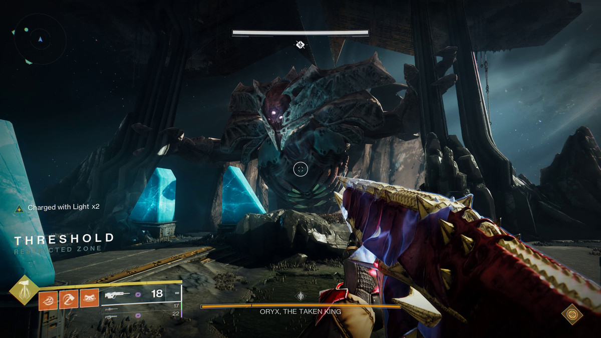
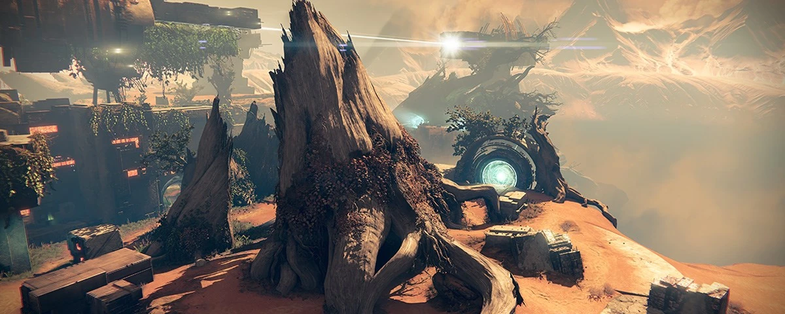
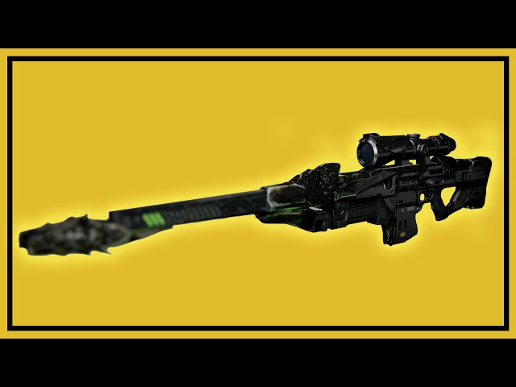

What is the Taken King DLC?
*The TTK DLC, is one of destiny 1's biggest DLC's. The DLC has introduced many new subclasses as well game breaking records. The DLC features a new PVE, PVP, and many other modes that we will discuss here on our forum! Enjoy*
- * Raids and PVE:
- There is a new raid called: "KINGSFALL". KF features a challenge mode and easy mode. Both modes, have the guardians go through 5-6 counters. Many noteable
encounters include, glogoroth, the maze, oryx's sister, oryx, and much more. Other PVE includes a new campaign, strikes, and NPC characters that can offer
awsome side quest. One strike that comes to mind is the "Blighted Chalice." The Chalice has a black orb that can take your light as it is filled with darkness,
so do be careful!
 - * Crucible:
- The Crucible has lot's of fun with the new DLC. For starters, there a lot's of bug fixes and nerfs that have been done on the weapons. Furthermore, there are
new maps to play on. One map that comes to mind is the one on planet saturn. In fact, there is one map called the "corssroads". In this map, you can teleport from
one area to other, by simply going through a portal.
 - * Weapons and others:
- With the new DLC, there are new weapons we can use to play around with. One weapon is the black spindle. This weapon is a great example, of an exotic quest weapon.
In order to obtain this weapon, you have to alter a mission. However, fair warning, this mission will become very difficult as you will be on a timer. Going back, this
weapon is a sniper rifle with an exotic perk, that can give you another short, after three consecutive headshots. Furthermore, the dlc, has brought many other weapons
from sniper rifles, auto riles, handcanaons, and much more.
